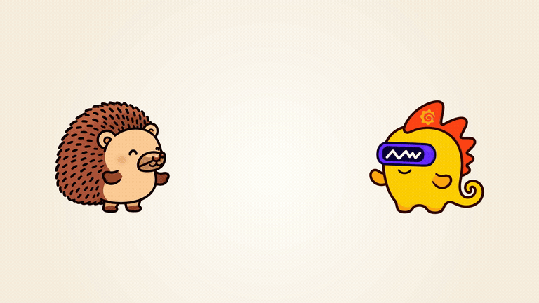

Using PostHog
to Test PostHog
with Grafana k6
and PostHog MCP
and the Grafana k6 MCP,
presented at the Grafana Meetup
at PostHog
Not affiliated with PostHog (just standing in their office)
Using PostHog to Test PostHog with Grafana k6 and PostHog MCP and the Grafana k6 MCP, presented at the Grafana Meetup at PostHog
Two tools, one goal: know your users
Grafana k6 makes load tests perfectly match your users.
Browser tests for fidelity. Protocol tests for scale.
PostHog makes sure you perfectly understand what your users are doing.
Events, session replay, feature flags, network metrics.
This talk: use the second to keep the first honest.
The reference journey
Grafana k6 driving the PostHog UI

Recording missing: run slides/record.sh
$ k6 run k6/journey.jsAPI calls captured: 0
The app changed. The load test didn't.
Before the PRflag search, debounced

debouncedlist requests: 0
Browser journey4
Grafana k6 load test4
After the PRdebounce removed, behind a PostHog feature flag

no debouncelist requests: 0
Browser journey20–26
Grafana k6 load test4 ✓ still passes
Flag-list API calls per journey, measured on the demo stack (after the PR: 3 runs).
Your load test passed.
But it's now out of date.
The obvious fix
Why not just run thousands of Grafana k6 browsers?
Protocol VU
1.7 MB
0.1 CPU-seconds per journey
Browser VU (real Chromium)
1.55 GB
11 CPU-seconds per journey
~900× the memory. ~100× the CPU. Same journey.
1,000 browser VUs ≈ 1.5 TB of RAM. So load tests stay protocol, and protocol tests drift.
Measured here: same journey, Grafana k6 v2.3, peak memory of Grafana k6 + Chromium, 3 runs each.
Grafana: protocol VUs use ~1–5 MB (Running large tests); Grafana Cloud bills browser VUs at 10× for their resource use.
The idea, part 1
Record what a real browser actually sends
// k6/journey.js: the reference journey
page.on('request', (req) => {
if (isAppApi(req)) apiCalls.add(1, {
route: routeKey(req.method(),
req.url(), req.postData()),
})
})
…every fetch and XHR the page makes, keyed by method and route template
PostHog sees it too.
Same calls, in PostHog's own network metrics. Recorded by PostHog, about PostHog.
Here, a cross-check. In production, the reference.
The idea, part 2
Score the protocol test against it
| Gate | Question | Pass if | Catches |
|---|
| Coverage | Do we hit the routes the browser hits? | ≥ 0.95 | new routes |
| Mix | In the same proportions? | ≥ 0.85 | volume shifts |
| Stale | Are we calling routes that are gone? | ≤ 0.02 | removed routes |
| Errors | Is the test itself failing? | ≤ 0.01 | a broken test |
Independent pass/fail. Thresholds calibrated from 5 baseline runs, not vibes.
Both MCPs, one loop
PostHog tells the agent what users do.
Grafana k6 makes the test match.
PostHog MCP
execute-sqlwhat users' browsers sent: 28 routes
Claude
edit api.jsmatch the mix
Grafana k6 MCP
validate_scriptvalid, 84/84 checks
Grafana k6 MCP
run_script336/336 checks
Graded against PostHog's user traffic: C 98.8%, M 98.5%, PASS
One recorded run (agent-eval/both-mcps.sh), Claude Sonnet 5.5 headless, 12 turns, $1.45. Users: Grafana k6 browsers with the debounce removed.
The same gates, pointed at PostHog's user traffic
Are you load-testing where your users are?
PostHog network metrics: every API call users' browsers made
vs
Grafana k6 load test: what we replay
→
score.js: Coverage, Mix, Stale
Coverage
89.9%
of user calls hit a route the test covers
Mix
57.3%
overlap in where the calls go
Stale
35.8%
of the test's calls go where users never went
The load test hammers
feature_flags/ · flag detail · dashboards/ · dashboard detail · insight_variables
Users actually hit
ActorsQuery · EventsQuery · hog_functions · cohorts/ · customer_profile_configs
Users here: Grafana k6 browsers on persons, insights, activity and cohorts, 2 minutes on the demo stack.
Recorded on this laptop: me, clicking around
How do I compare to the load test?
I hit, the test never does
ActorsQuery · customer_profile_configs · column_configurations · integrations
The test hammers, I never did
feature_flags/ · flag detail · dashboards · insights · cohorts
./demo.sh users 3m: 21 API calls across 17 routes from my browser, sign-in included. All three gates fail.
Then let the agent write the test from it
My clicks, as a Grafana k6 load test
PostHog MCP
execute-sqlmy session: 21 calls, 17 routes
Claude
k6/session.jssame routes, same order, 3 VUs
Grafana k6 MCP
validate_script → run_script19/19, then 95/95 checks, 0% failed
| Scored against my session | Coverage | Mix | Stale |
|---|
| The stage load test | 66.7% | 59.7% | 35.8% |
| Generated from my clicks | 90.5%* | 90.5% | 0% |
* The only routes missing are my two sign-in calls; the test signs in once in setup(). One recorded run, Claude Sonnet 5.5, 20 turns, $1.07.
Three things to take home
1
A green load test can be testing yesterday's app.
One PR: the browser went from 4 to 20–26 flag-list calls. The load test sent 4, and passed.
2
Score it against what users actually send.
A Grafana k6 browser on a PR, PostHog in production. The same gates catch drift and tests in the wrong part of the app.
3
Let an agent keep it current.
PostHog MCP: what users do. Grafana k6 MCP: validate and run the fix. Then check it really used them.
Grafana k6 makes the test match your users. PostHog shows you who they are now.
Keep them in sync, or a green test is generating yesterday's load.

github.com/unlikelyzero/
posthog-all-the-way-down
Questions? Not affiliated with PostHog.
 PostHog mentions: 0
PostHog mentions: 0 Grafana mentions: 0
Grafana mentions: 0